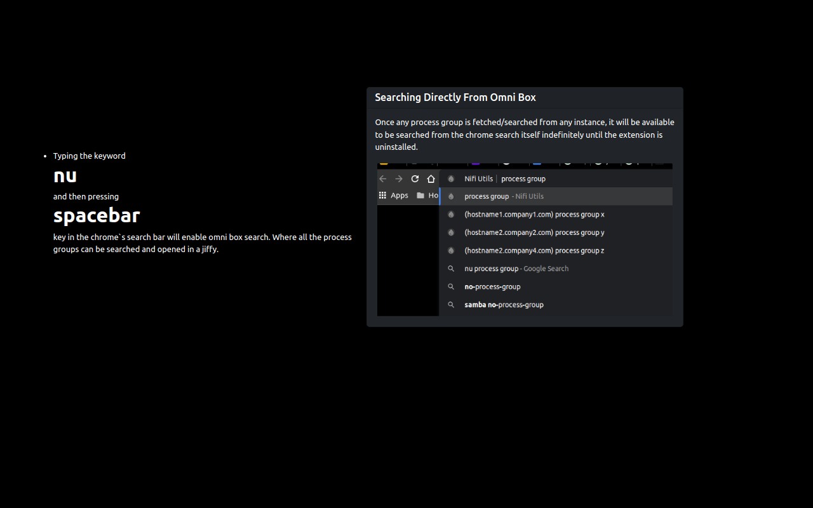

Nifi Utils
This extension eases the process of maintaining huge production nifi instances with numerous flows.
Successfully Installed...!
This extension only works on Nifi instances that are deployed / productionized. When installed, it identifies when a logged-in Nifi instance is opened in the currently active tab in the browser. Then it inserts a content script, which retrieves the JWT (JSON Web Token) token and hostname from the currently active tab to the extension. Then using that token and the instance`s hostname, one can retrieve a list of all the process groups present on the screen, bookmark any process group by adding them to the queue, and search for any process group. All the results by any of the features provided are cached to be viewed later. The operation of getting the hostname and JWT token should be performed, whenever the user wants to fetch or search for new data or update existing data. Once any process group is fetched/searched from any instance, it will be available to be searched from the chrome search itself indefinitely until the extension is uninstalled.
Anger is a statement, well like a statement after return; statement. It
is of no use. But on the other hand, constructive criticism is definitely of some use. So, if
you find any bugs or you don't like this extension, Be patient & provide feedback on the same.
Will try to improve it to the best of my ability.
- When the button is clicked, the extension retrieves all the process groups present on the screen in Nifi into a HTML table inside the extension.
- And the records can be filtered by searching for a process group name. Also the process groups can be sorted by number of running, stopped, invalid, disabled processor counts by clicking on the corresponding column name.
- And when the button is clicked, the cached process groups are cleared.
Fetching Process Groups
All process groups visible on the current Nifi screen are fetched inside the extension.

Adding To The queue
The process groups can be bookmarked, by adding them to the queue.

- When the button is clicked, the corresponding process group is added to the queue.
- Alternatively, all process groups can be added to the queue by clicking on the button.
- When the button is clicked, the corresponding process group is removed from the queue.
- The queue will be copied onto the clipboard in the form of CSV data, by clicking on the button.
- The items cached in the queue will be cleared, by clicking on the button.
Managing the queue
Items in the queue can be cleared or copied onto the clipboard as CSV data.

Global Search For Process Groups
Unlike fetch process groups, which just fetches the process groups present on the screen, This feature searches for the given keyword in whole of the current Nifi instance.

- When the button is clicked, with some keyword provided in the search box, the search results are fetched and displayed inside the extension.
- The search results will be copied onto the clipboard in the form of CSV data, by clicking on the button.
- The items cached in the search results will be cleared, by clicking on the button.
-
Typing the keyword
nu
and then pressingspacebar
key in the chrome`s search bar will enable omni box search. Where all the process groups can be searched and opened in a jiffy.
Searching Directly From Omni Box
Once any process group is fetched/searched from any instance, it will be available to be searched from the chrome search itself indefinitely until the extension is uninstalled.
